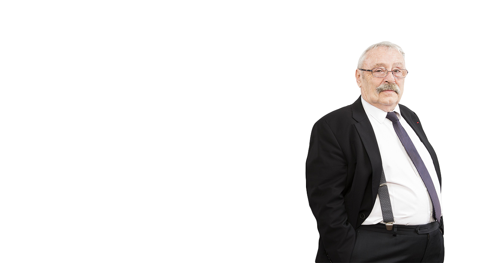
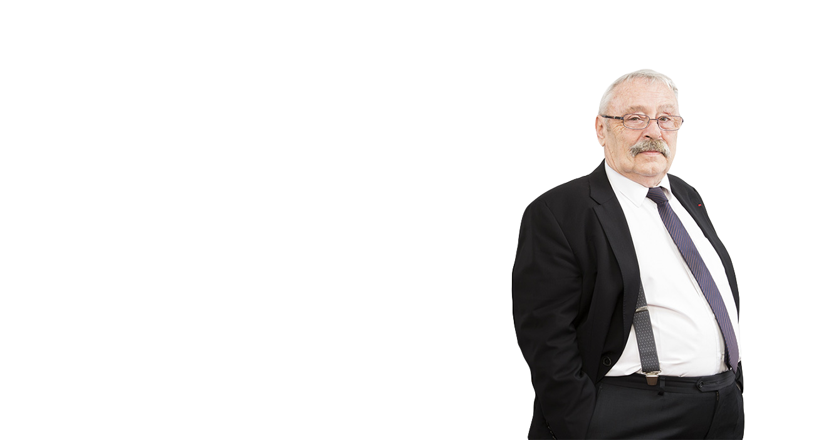

Les mutations du travail, nous les avons vécues depuis quarante ans, en acteurs ou en observateurs de l’éclatement de la collectivité de travail. Dans le même temps se faisaient jour des exigences de plus en plus fortes de résultats individuels et collectifs. Nous avons eu à gérer la traduction de ce morcellement en termes d’employabilité et de licenciements.
Eclatement de la collectivité de travail, des statuts des salariés : à l’entreprise qui résonnait de tous ses métiers et compétences a succédé de nombreux cercles qui résonnent de moins en moins ensemble et dans lesquels le sens du collectif se dissout.
De cette période nous avons appris qu’il ne faut pas contrer les évolutions du monde du travail mais les accompagner dans un projet commun à la fois managérial et social.
Ces quarante années passées résonnent dans les solutions que nous vous proposerons. Resserrer le champ conventionnel, l’adapter aux nouveaux statuts des relations du travail, imaginer de nouvelles formes de contrat social, sont l’écho de nos expériences passées.
Nous avons acquis notre expérience à l’aune des changements qu’il nous a été donné d’accompagner. De l’enrichissement des tâches des années 70, aux rapprochements des lieux de décisions de ceux où les tâches sont exécutées, de la participation, des prémices de la GPEC à l’individualisation des relations de travail, nous avons connus les difficultés du management à sortir du travail prescrit.
Nous n’avons, en outre, pas traversés ces décennies sans nous départir de la nécessité de conduire le changement et de façonner le management en lien étroit avec les relations sociales. La négociation, le rôle des partenaires sociaux, la gestion des conflits, ont fabriqué notre expérience du social en entreprise.
C’est aussi parce que nous savons« d’où vient l’entreprise »que nous pouvons« savoir où on en est »et vous conseiller utilement.